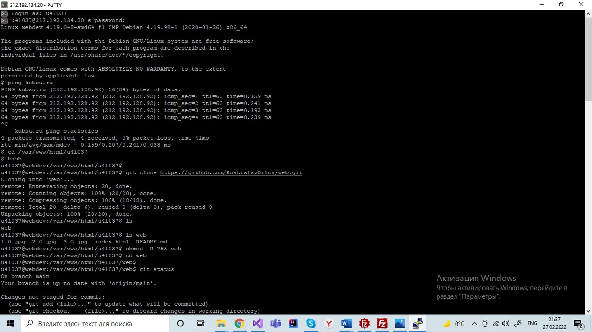
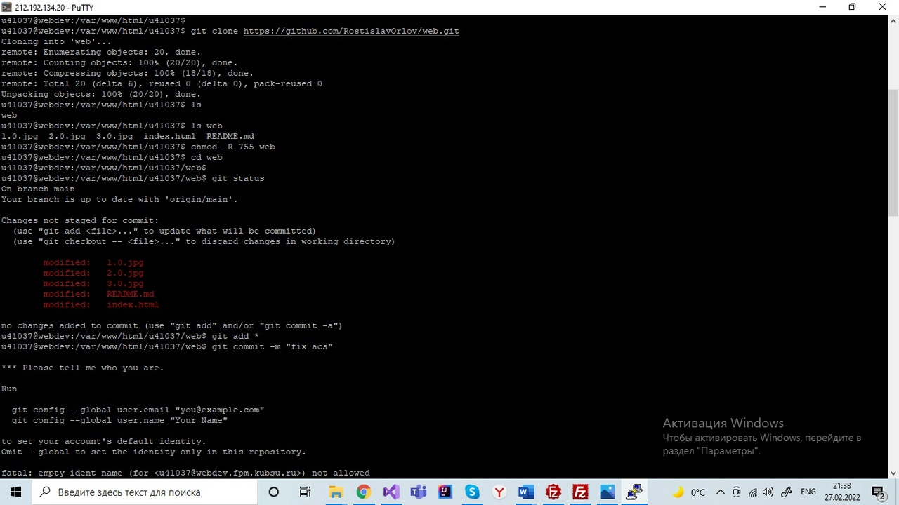
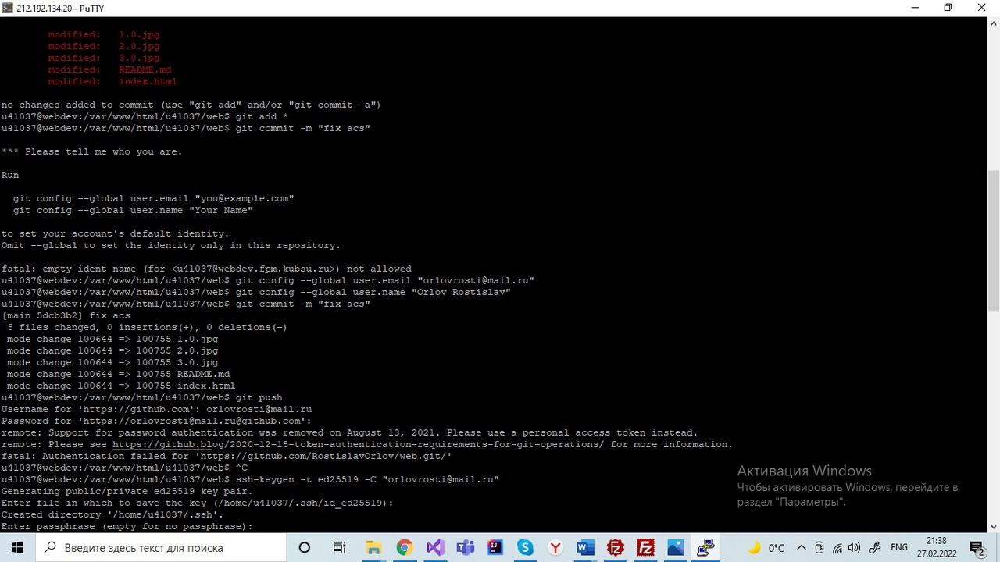
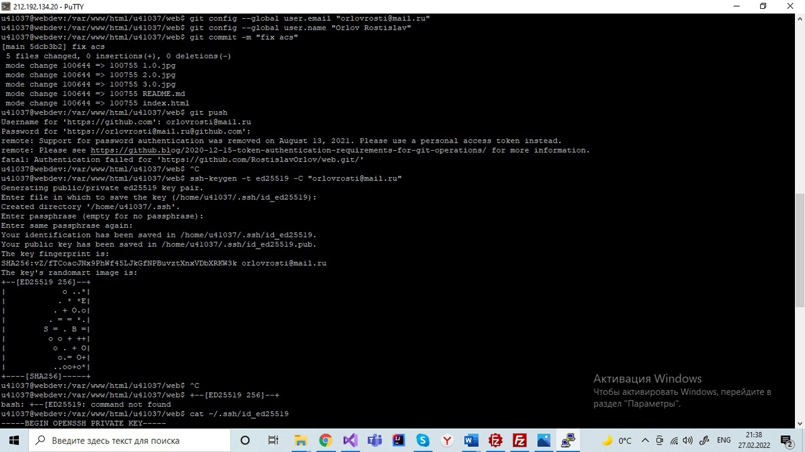
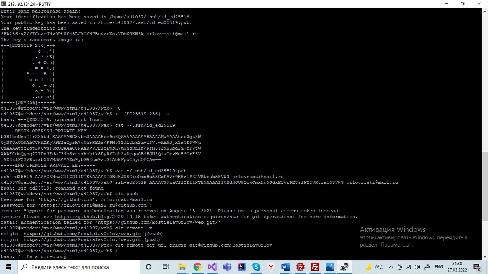
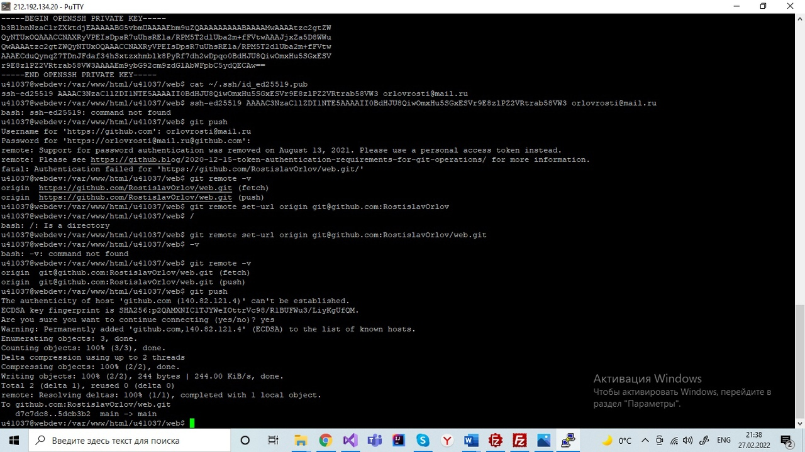
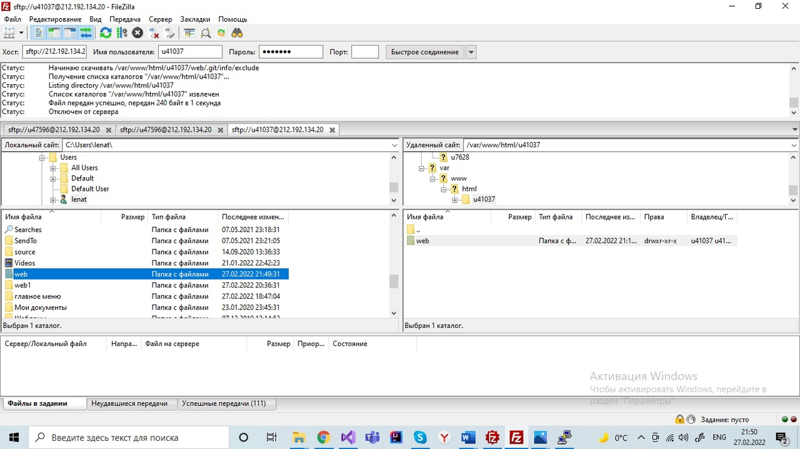
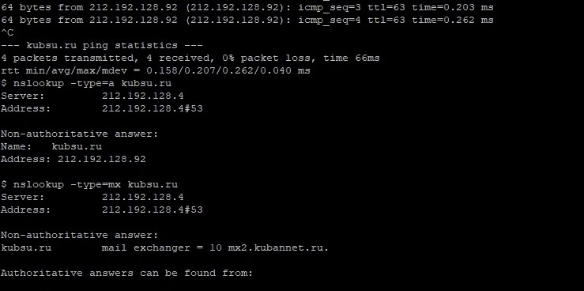
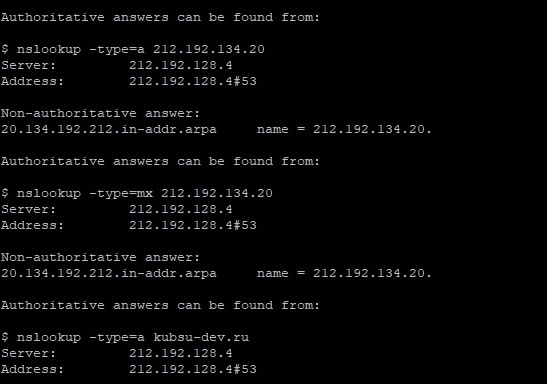
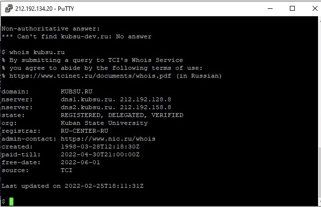

С помощью команды ping на учебном сервере узнаю IP-адрес веб-сервера kubsu.ru
Клонирование репозитория с помощью git clone
     Использование команды nslookup для получения A и MX записей доменов kubsu.ru и kubsu-dev.ru
 Использование команды whois для получения даты регистрации домена kubsu.ru
